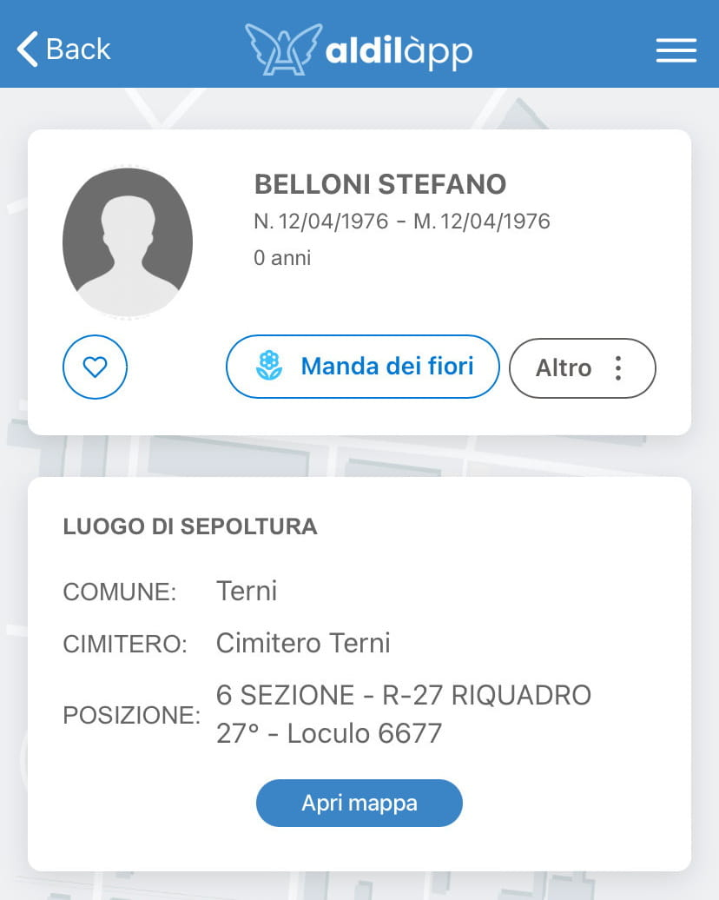
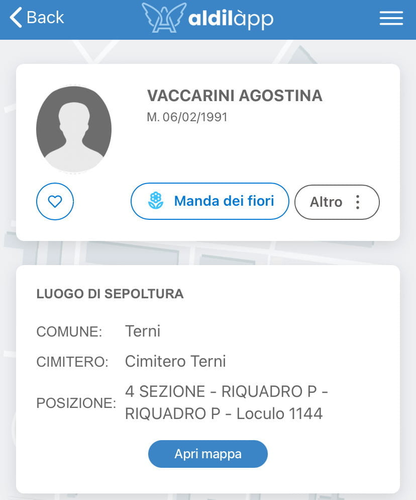
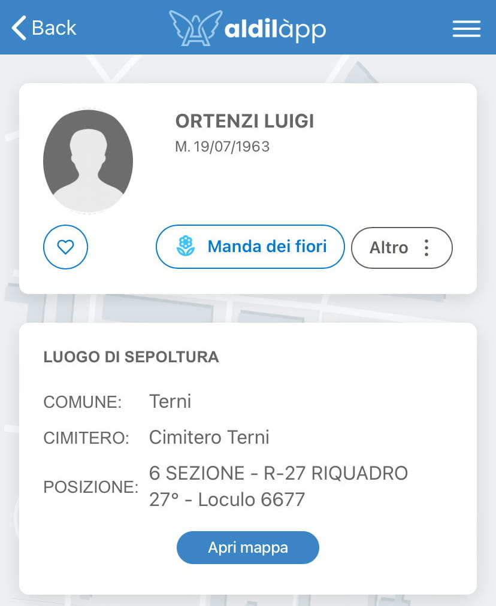
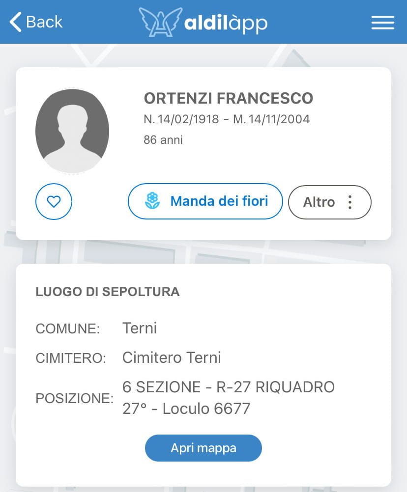
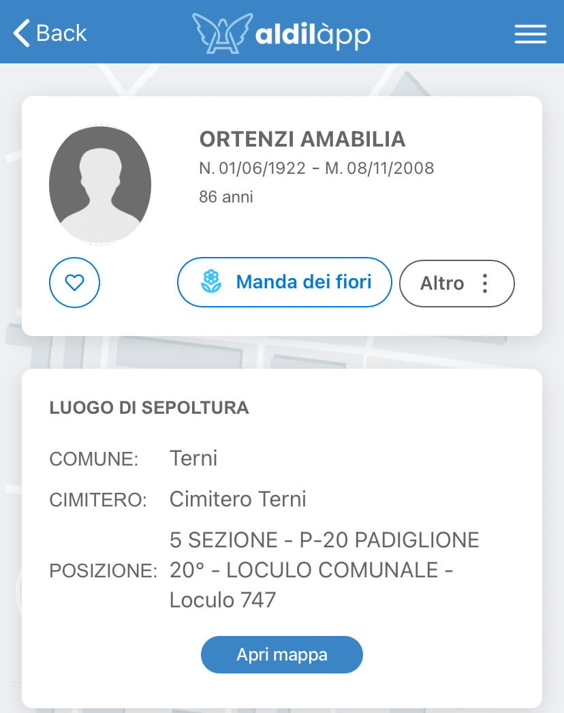
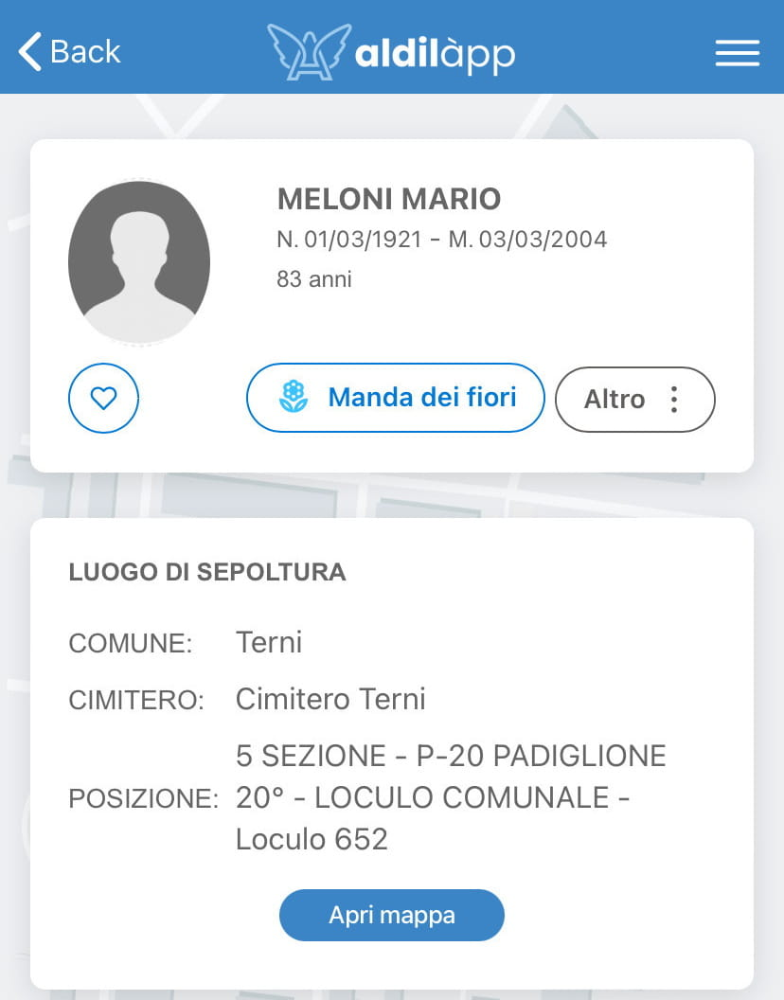
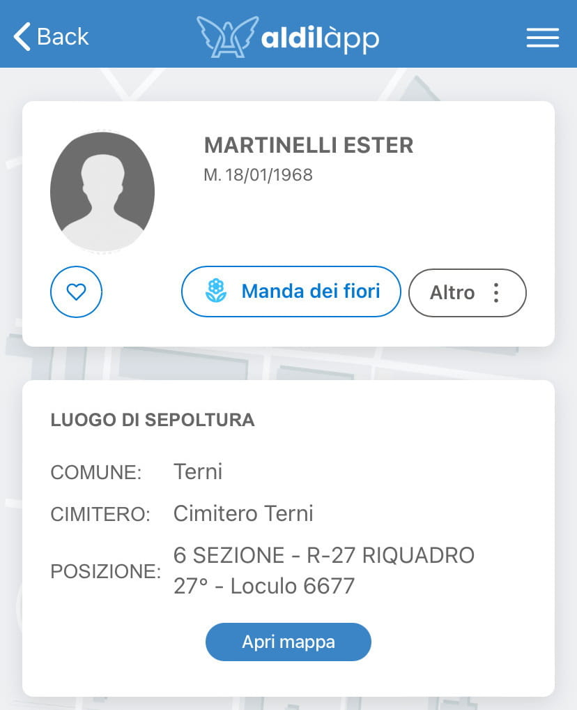
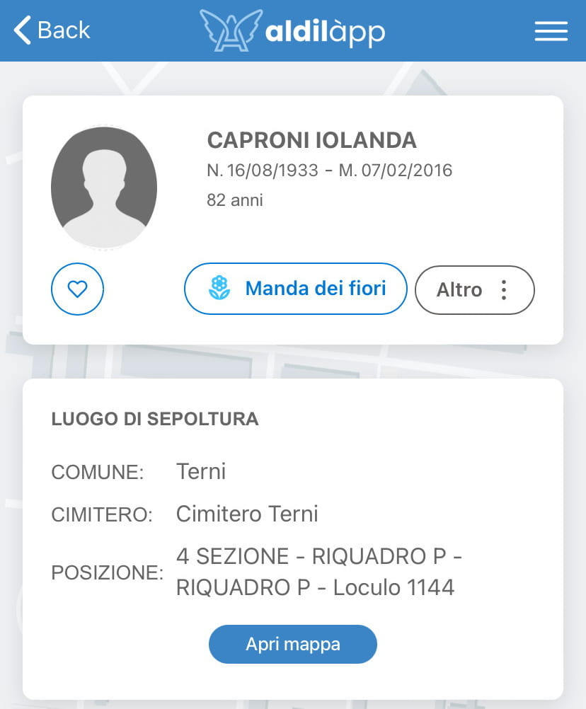
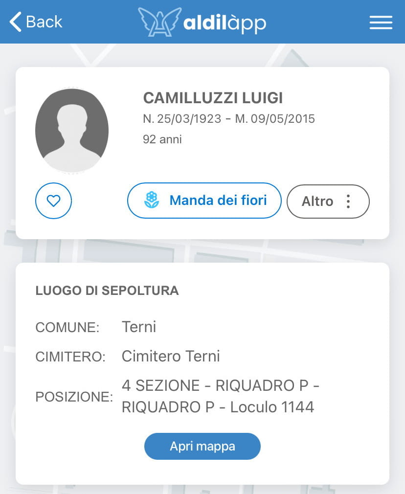
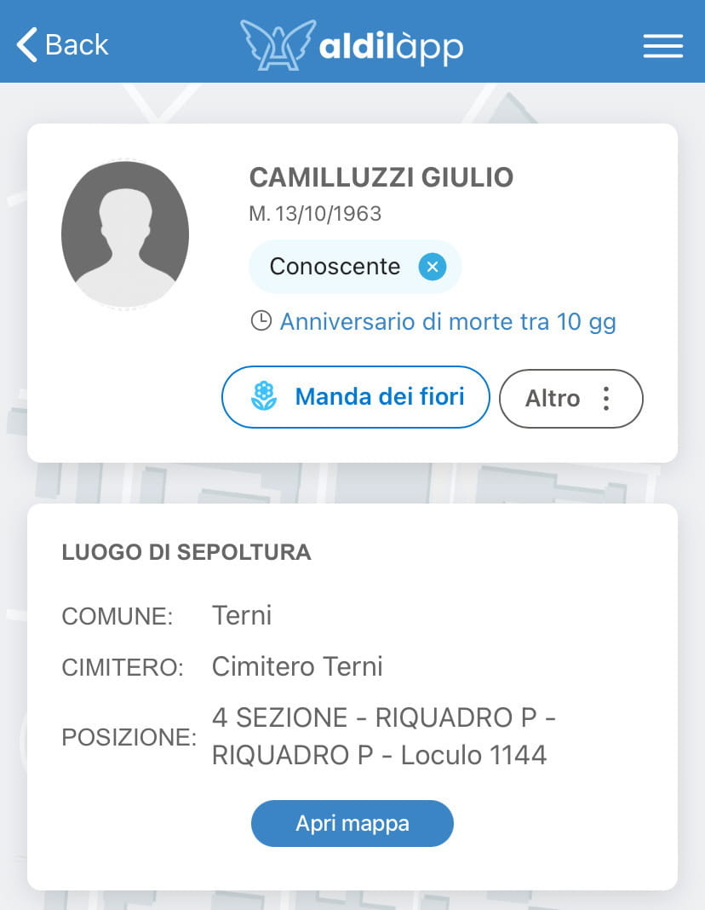

Aldilàpp - Terni
Multimedia


×
❮
❯
1/10 - Aldilapp_Belloni_Stefano

2/10 - Aldilapp_Vaccarini_Agostina

3/10 - Aldilapp_Ortenzi_Luigi

4/10 - Aldilapp_Ortenzi_Francesco

5/10 - Aldilapp_Ortenzi_Amabilia

6/10 - Aldilapp_Meloni_Mario

7/10 - Aldilapp_Martinelli_Ester

8/10 - Aldilapp_Caproni_Iolanda

9/10 - Aldilapp_Camilluzzi_Luigi

10/10 - Aldilapp_Camilluzzi_Giulio

Riferimenti
-
- Birth, Meloni, Mario
- Death, Camilluzzi, Luigi
- Camilluzzi, Luigi
- 5 SEZIONE - P-20 PADIGLIONE 20° LOCULO COMUNALE - Loculo 652
- Ortenzi, Francesco
- Ortenzi, Amabilia
- Birth, Ortenzi, Francesco
- Birth, Caproni, Iolanda
- Death, Meloni, Mario
- Birth, Ortenzi, Amabilia
- Death, Ortenzi, Amabilia
- Ortenzi, Luigi
- Vaccarini, Agostina (Eugenia)
- 5 SEZIONE - P-20 PADIGLIONE 20° LOCULO COMUNALE - Loculo 747
- Meloni, Mario
- Caproni, Iolanda
- Death, Ortenzi, Luigi
- Death, Martinelli, Ester
- Cappella di Famiglia Camilluzzi Luigi, Cimitero di Terni, Terni, Umbria
- Death, Ortenzi, Francesco
- Death, Vaccarini, Agostina (Eugenia)
- Death, Caproni, Iolanda
- Martinelli, Ester